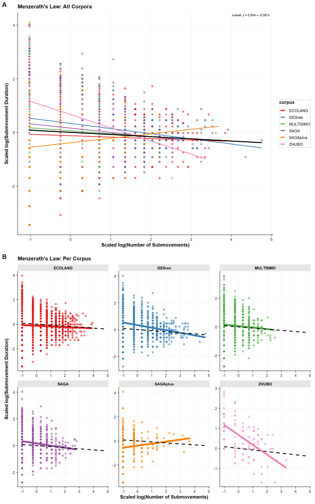
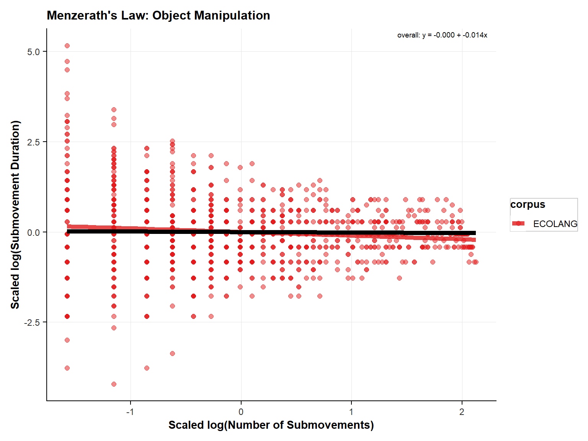

# Set some plotting defaultslibrary(RColorBrewer)# Enhanced plotting thememy_theme <-function() {theme_cowplot() +theme(text =element_text(size =10, family ="sans"),axis.text =element_text(size =9, color ="grey20"),axis.title =element_text(size =11, face ="bold"),plot.title =element_text(size =12, face ="bold", hjust =0),panel.grid.major =element_line(color ="grey90", linewidth =0.3),panel.grid.minor =element_blank(),panel.background =element_rect(fill ="white", color =NA),plot.background =element_rect(fill ="white", color =NA),legend.text =element_text(size =9),legend.title =element_text(size =10, face ="bold"),legend.position ="right",legend.background =element_rect(fill ="white", color ="grey80"),legend.key =element_rect(fill ="white", color =NA),plot.margin =margin(10, 10, 10, 10) )}# colors - more contrastivecorpus_colors <-c("ECOLANG"="#E41A1C","GESres"="#377EB8", "MULTISIMO"="#4DAF4A","SAGA"="#984EA3","SAGAplus"="#FF7F00","ZHUBO"="#F781BF")
Models
The models that we construct all share that they have as their response variable the log-transformed subm_dur_ms (submovement duration), and as a fixed effect predictor the log-transformed n_submovements (number of submovements). Since there are multiple observations of submovement durations per gesture, we include gesture_id as a random effect nested within speaker and corpus to account for this non-independence. We follow closely the modeling approach of (Wascher and Youngblood 2025) as provided here https://masonyoungblood.github.io/crow_efficiency/.
Below the blocks allows for inspection of the mixed regression models, their equations, plotting code.
Key mixed regression models for assessing Menzerath-Altman law
Code
library(lme4)library(lmerTest)library(dplyr)library(equatiomatic)# remove any rows with single submovement gesturesgesdat <- gesdat[gesdat$n_submovements >1, ]# Basic Menzerath model with corpus in random structuregesture_menz_model <-lmer(scale(log(subm_dur_ms)) ~scale(log(n_submovements)) + (1|corpus/speaker/gesture_id), data = gesdat)# For LaTeX outputequationmenz <-extract_eq(gesture_menz_model, use_coefs =TRUE)
Equations of the models
\[
\begin{aligned}
\operatorname{\widehat{subm\_dur\_ms}}_{i} &\sim N \left(0_{\alpha_{j[i],k[i],l[i]}} - 0.08_{\beta_{1}}(\operatorname{scale(\log(n\_submovements))}), \sigma^2 \right) \\
\alpha_{j} &\sim N \left(0, 0.17 \right)
\text{, for gesture\_id:(speaker:corpus) j = 1,} \dots \text{,J} \\
\alpha_{k} &\sim N \left(0, 0.12 \right)
\text{, for speaker:corpus k = 1,} \dots \text{,K} \\
\alpha_{l} &\sim N \left(0, 0.12 \right)
\text{, for corpus l = 1,} \dots \text{,L}
\end{aligned}
\]
Plotting code for Menzerath’s law models
Code
library(ggplot2)library(cowplot)library(lmerTest)library(svglite)# create plots folderdir.create(paste0(current_dir, "/plots"), showWarnings =FALSE)# Extract fixed effects coefficientscoef_menz <-fixef(gesture_menz_model)# get median submovement duration per gesturegesdat_summary <- gesdat %>%group_by(gesture_id, n_submovements, corpus) %>%summarise(subm_dur_median =median(subm_dur_ms), .groups ="drop")# scale using the full dataset parameters (as.numeric to avoid matrix)gesdat_summary$x_scaled <-as.numeric(scale(log(gesdat_summary$n_submovements)))gesdat_summary$y_scaled <-as.numeric(scale(log(gesdat_summary$subm_dur_median)))# Create prediction line using same scalingpred_x <-seq(min(gesdat_summary$x_scaled), max(gesdat_summary$x_scaled), length.out =100)pred_y <- coef_menz[1] + coef_menz[2] * pred_xpred_line <-data.frame(x = pred_x, y = pred_y)# per-corpus regression linescorpus_lines <- gesdat_summary %>%group_by(corpus) %>%summarise(intercept =coef(lm(y_scaled ~ x_scaled))[1],slope =coef(lm(y_scaled ~ x_scaled))[2],x_min =min(x_scaled),x_max =max(x_scaled),.groups ="drop" ) %>%rowwise() %>%do({ x_seq <-seq(.$x_min, .$x_max, length.out =50)data.frame(corpus = .$corpus, x = x_seq, y = .$intercept + .$slope * x_seq) })# main plot with all datap1 <-ggplot(gesdat_summary, aes(x = x_scaled, y = y_scaled, color = corpus)) +geom_point(alpha =0.5, size =2) +geom_line(data = corpus_lines, aes(x = x, y = y, color = corpus), linewidth =0.8, alpha =2) +geom_line(data = pred_line, aes(x = x, y = y), color ="black", linewidth =1.2, inherit.aes =FALSE, size =2) +annotate("text", x =Inf, y =Inf, label =sprintf("overall: y = %.3f + %.3fx", coef_menz[1], coef_menz[2]),hjust =1.1, vjust =1.5, size =2.5) +labs(x ="Scaled log(Number of Submovements)", y ="Scaled log(Submovement Duration)",title ="Menzerath's Law: All Corpora") +scale_color_manual(values = corpus_colors) +my_theme()
Warning: Using `size` aesthetic for lines was deprecated in ggplot2 3.4.0.
ℹ Please use `linewidth` instead.
Code
# faceted plot per corpusp_facet <-ggplot(gesdat_summary, aes(x = x_scaled, y = y_scaled, color = corpus)) +geom_point(alpha =0.5, size =2) +geom_line(data = corpus_lines, aes(x = x, y = y, color = corpus), linewidth =2) +geom_line(data = pred_line, aes(x = x, y = y), color ="black", linewidth =1, linetype ="dashed", inherit.aes =FALSE) +facet_wrap(~ corpus, scales ="free") +labs(x ="Scaled log(Number of Submovements)", y ="Scaled log(Submovement Duration)",title ="Menzerath's Law: Per Corpus") +scale_color_manual(values = corpus_colors, guide ="none") +my_theme() +theme(strip.background =element_rect(fill ="grey90"),strip.text =element_text(face ="bold"))# combined plotp_combined <-plot_grid(p1, p_facet, ncol =1, rel_widths =c(1, 1.5), labels =c("A", "B"))# save plotsggsave(paste0(current_dir, "/plots/menzerath_all_corpora.svg"), p1, width =8, height =6)ggsave(paste0(current_dir, "/plots/menzerath_per_corpus.svg"), p_facet, width =12, height =8)ggsave(paste0(current_dir, "/plots/menzerath_combined.svg"), p_combined, width =16, height =6)
General pattern Menzerath’s law in gestures
We assessed the overall relationship between number of submovements and submovement duration (beta = -0.081, SE = 0.009, p < 0.001).

Figure. Scaling relationship according to the linear mixed regression model. (A) All corpora combined with overall regression line (black) and per-corpus lines. (B) Faceted view per corpus with overall line (dashed) for reference.
Table: Per-corpus Menzerath effects for gesture category
Corpus
N gestures
N speakers
beta
SE
95% CI
p
Speaker SD
R2_fixed
R2_total
dAIC
ECOLANG
3136
15
-0.036
0.011
[-0.059, -0.014]
0.001
0.084
0.001
0.035
7.2
GESres
925
7
-0.170
0.019
[-0.208, -0.132]
< 0.001
0.121
0.029
0.067
-25.7
MULTISIMO
561
18
-0.109
0.022
[-0.152, -0.066]
< 0.001
0.066
0.012
0.022
6.8
SAGA
573
4
-0.097
0.027
[-0.149, -0.045]
< 0.001
0.151
0.009
0.061
-4.9
SAGAplus
224
10
0.110
0.053
[0.005, 0.214]
0.047
0.133
0.012
0.068
-4.2
Note:
dAIC = AIC_loglog - AIC_linear; negative values indicate log-log model is better fit
Confound Analysis: Object Manipulation
To assess whether the Menzerath-Altman relationship is specific to communicative gestures, we repeat the analysis for object manipulation movements which were also annotated in the ECOLANG corpus. We should expect here that these movements follow communicative efficiency principles less (but they might be regulated by general efficiency principles).
Object manipulation analysis
Code
# filter for n_submovements > 1objman_dat <- objman_dat[objman_dat$n_submovements >1, ]# model for objman - only ECOLANG has data, so no corpus random effectobjman_menz_model <-lmer(scale(log(subm_dur_ms)) ~scale(log(n_submovements)) + (1|speaker/gesture_id), data = objman_dat)# coefficientscoef_objman <-fixef(objman_menz_model)sum_objman <-coef(summary(objman_menz_model))# summary dataobjman_summary <- objman_dat %>%group_by(gesture_id, n_submovements, corpus) %>%summarise(subm_dur_median =median(subm_dur_ms), .groups ="drop")objman_summary$x_scaled <-as.numeric(scale(log(objman_summary$n_submovements)))objman_summary$y_scaled <-as.numeric(scale(log(objman_summary$subm_dur_median)))# prediction linepred_x_obj <-seq(min(objman_summary$x_scaled), max(objman_summary$x_scaled), length.out =100)pred_y_obj <- coef_objman[1] + coef_objman[2] * pred_x_objpred_line_obj <-data.frame(x = pred_x_obj, y = pred_y_obj)# per-corpus lines for objman (only ECOLANG)corpus_lines_obj <- objman_summary %>%group_by(corpus) %>%summarise(intercept =coef(lm(y_scaled ~ x_scaled))[1],slope =coef(lm(y_scaled ~ x_scaled))[2],x_min =min(x_scaled),x_max =max(x_scaled),.groups ="drop" ) %>%rowwise() %>%do({ x_seq <-seq(.$x_min, .$x_max, length.out =50)data.frame(corpus = .$corpus, x = x_seq, y = .$intercept + .$slope * x_seq) })# plotp_objman <-ggplot(objman_summary, aes(x = x_scaled, y = y_scaled, color = corpus)) +geom_point(alpha =0.5, size =2) +geom_line(data = corpus_lines_obj, aes(x = x, y = y, color = corpus), linewidth =2, alpha =0.8) +geom_line(data = pred_line_obj, aes(x = x, y = y), color ="black", linewidth =2, inherit.aes =FALSE) +annotate("text", x =Inf, y =Inf, label =sprintf("overall: y = %.3f + %.3fx", coef_objman[1], coef_objman[2]),hjust =1.1, vjust =1.5, size =2.5) +labs(x ="Scaled log(Number of Submovements)", y ="Scaled log(Submovement Duration)",title ="Menzerath's Law: Object Manipulation") +scale_color_manual(values = corpus_colors) +my_theme()# saveggsave(paste0(current_dir, "/plots/menzerath_objman.svg"), p_objman, width =8, height =6)
For object manipulation movements, we did not obtain reliable results (beta = -0.014, SE = 0.010, p = 0.154), which is contrast to the previous analysis, also specifically in contrast to communicative gestures produced in the same ECOLANG corpus.

Figure. Menzerath’s law relationship for object manipulation movements.
Table: Fixed Effects for Object Manipulation Menzerath Model
Parameter
Estimate
SE
t-value
p
Intercept
-0.000
0.022
-0.01
0.996
log(Number of Submovements)
-0.014
0.010
-1.43
0.154
Confound analysis: Object manipulation category
Object manipulation per-corpus model fitting
Code
# fit for objman - only ECOLANG has datacorpus_results_objman <-fit_corpus_model(objman_dat, "ECOLANG")corpus_table_objman <- corpus_results_objmancorpus_table_objman$beta_fmt <-sprintf("%.3f", corpus_table_objman$beta)corpus_table_objman$SE_fmt <-sprintf("%.3f", corpus_table_objman$SE)corpus_table_objman$CI_fmt <-sprintf("[%.3f, %.3f]", corpus_table_objman$CI_low, corpus_table_objman$CI_high)corpus_table_objman$p_fmt <-ifelse(corpus_table_objman$p <0.001, "< 0.001", sprintf("%.3f", corpus_table_objman$p))corpus_table_objman$Speaker_SD_fmt <-sprintf("%.3f", corpus_table_objman$Speaker_SD)corpus_table_objman$R2_fixed_fmt <-sprintf("%.3f", corpus_table_objman$R2_fixed)corpus_table_objman$R2_total_fmt <-sprintf("%.3f", corpus_table_objman$R2_total)corpus_table_objman$delta_AIC_fmt <-sprintf("%.1f", corpus_table_objman$delta_AIC)
Table: Per-corpus Menzerath effects for object manipulation category
Corpus
N gestures
N speakers
beta
SE
95% CI
p
Speaker SD
R2_fixed
R2_total
dAIC
(Intercept)
ECOLANG
1156
15
-0.014
0.010
[-0.032, 0.005]
0.160
0.074
0.000
0.017
1.3
Note:
dAIC = AIC_loglog - AIC_linear; negative values indicate log-log model is better fit